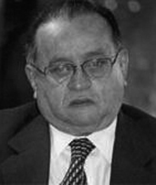

Nascido em 3 de janeiro de 1934, em Pedro Afonso/TO, José Edmar de Brito Miranda formou-se em Direito pela Universidade Federal de Goiás, com especialização em Direito Agrário. Atuou como promotor de Justiça, presidiu o Instituto de Desenvolvimento Agrário de Goiás (IDAGO) e foi chefe de gabinete da Secretaria da Agricultura do Estado.
Elegendo-se deputado estadual por Goiás em 1962. Com o bipartidarismo do regime militar, ingressou no MDB e foi reeleito em 1966. Após um período fora da política, retornou ao parlamento goiano pelo PMDB em 1982 e 1986. Em 1988, foi candidato a vice-governador do recém-criado Estado do Tocantins. Foi casado com Marly Carvalho Miranda e teve três filhos, entre eles Marcelo Miranda, governador do Tocantins por três mandatos (2002, 2006 e 2014).
